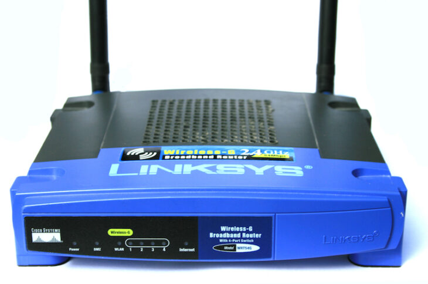

The Autopsy Report · Device #032
The Linksys WRT54G
The blue-and-black box that taught the internet to hack its own router — and the lawsuit, the firmware wars, and the little ‘L’ model that kept the dream alive.
What is this thing?
The Linksys WRT54G is a family of wireless-G broadband routers — boxes that connect a home network to the internet and share it over 802.11b/g Wi-Fi and Fast Ethernet. “WRT54G” isn't one device, though: it's a whole lineage of hardware revisions, from v1.0 to v8.x, plus siblings like the WRT54GS, the WRT54GL, and the WRT54G2, each with different chips inside the same idea. Wikipedia
Why it matters: the early WRT54G ran Linux, and when Linksys was obliged to release its source code under the GNU General Public License, the box became the seed crystal for an entire ecosystem — DD-WRT, Tomato, and OpenWrt all trace their lineage here. Wikipedia When later revisions switched to VxWorks and locked things down, Linksys re-released the old v4 hardware as the WRT54GL — the ‘L’ standing for Linux — just to serve the community it had accidentally created. WiFi Net News
Not on our bench (yet)
This device is not on our bench. We have never owned, opened, photographed, measured, or powered on the WRT54G. Everything in this report comes from public records: government filings, manufacturer documents, manuals, and credible public teardowns and hardware databases. Where a fact would require holding the hardware in our hands — our own photos, our measurements, our boot logs, the exact board revision of a future unit — we say so, out loud, and mark it unknown. Nothing here is presented as first-hand BareBoard evidence.
That constraint is also the point: you can learn a remarkable amount about a device without ever touching it, because the public record is deep. What follows is everything the record could tell us — and an honest map of where the record runs out.
A short history
- December 2002The original WRT54G is released, running Linux-based firmware. Wikipedia
- 2003-07-23The FCC grants equipment authorization Q87-WRT54G11 to LINKSYS LLC for the v1.1 hardware — the representative filing for this report. FCC filing
- 2005After the v5 hardware switches from Linux to VxWorks in November 2005, Linksys releases the WRT54GL — technically a reissue of the v4 hardware — to keep third-party Linux firmware alive. Wikipedia describes it as the best-selling router of all time. Wikipedia WiFi Net News
- 2006The Free Software Foundation sues Cisco (Linksys's owner) over GPL compliance for the WRT54G's firmware; the case settles. The full backstory — and what the industry learned — is told in detail. Wikipedia The New Stack
- 2003–2016Dozens of revisions ship — Broadcom SoCs give way to Atheros in some late models — before the line finally retires. The WRT54GL outlives them all as the community's favorite. Wikipedia
The outside
The classic WRT54G is instantly recognizable: a stackable blue-and-black box with two external antennas on reverse-polarity TNC connectors and a row of front-panel LEDs — power, DMZ, WLAN, internet, and one per Ethernet port. Wikipedia Later cost-cut revisions dropped the detachable antennas entirely, routing thin wires into fixed antenna shells instead.

The family wore other clothes too: the WRT54GS added SpeedBooster branding, the WRT54G2 moved to a smaller curved black case with internal antennas, and the WRT54GC shrank the whole thing to a 4-inch compact square. Wikipedia
The board
There is no single WRT54G board — each hardware revision is its own design, and the chips change completely across the family's life. The v1.1 board covered by the representative FCC filing was built by CyberTAN: a Broadcom BCM4702-class design with a separate Mini-PCI-style wireless card in v1.0, moving to an integrated wireless chipset by v1.1. FCC filing Wikipedia
Later revisions tell a story of cost reduction: v2.x moved to the BCM4712 at 200–216 MHz, v4.0 to the BCM5352 SoC, v5.x halved the RAM and flash (16→8 MB RAM, 4→2 MB flash) with the VxWorks switch, v7.0 briefly went Atheros (AR2317) — the one revision with no third-party firmware support at all — and v7.2/8.x returned to Broadcom's BCM5354. Wikipedia The WRT54GL v1.x boards are essentially v4.0 boards with Linux firmware restored.
Because revision-specific evidence must not be generalized: everything in the chip table below is v1.1 only, per its FCC filing. Other revisions are different hardware.
Under the microscope: the chips
What's on the v1.1 board, per its FCC equipment-authorization exhibits. Confirmed means a primary source — here, the FCC filing itself. Nothing below applies to other revisions.
| Chip | What it does | How we know | Dig deeper |
|---|---|---|---|
| Broadcom BCM4702 | The main processor on v1.1 — a 125 MHz MIPS SoC running the router. | Confirmed Named in the FCC filing's public exhibits for Q87-WRT54G11 (v1.1). | FCC filing |
| Broadcom BCM4306 | The 802.11b/g wireless MAC/baseband on v1.1. | Confirmed Named in the FCC filing's public exhibits for Q87-WRT54G11 (v1.1). | FCC filing |
| Broadcom BCM2050 | The 2.4 GHz radio transceiver paired with the BCM4306 on v1.1. | Confirmed Named in the FCC filing's public exhibits for Q87-WRT54G11 (v1.1). | FCC filing |
| ADMtek ADM6996 | The Ethernet switch behind the 4+1 Fast Ethernet ports on v1.1 (later revs moved to Broadcom switch chips). | Confirmed Named in the FCC filing's public exhibits for Q87-WRT54G11 (v1.1). | FCC filing |
Other revisions, other chips: v2.x used the BCM4712, v4.0/WRT54GL the BCM5352, v7.0 the Atheros AR2317, and late models the BCM5354 — per the public revision table. Wikipedia No public datasheets were located for these Broadcom/ADMtek parts; the vendors never published them.
The government's file on this box
Before Linksys could sell the WRT54G in the United States, the FCC had to certify its radio — and the representative filing is public under FCC ID Q87-WRT54G11, granted to LINKSYS LLC on July 23, 2003, covering hardware v1.1. FCC filing
- What's public: internal and external photos, the user manual, test reports, the operational description, and RF-exposure exhibits. The lab measured about 42 mW conducted output at 2.412–2.462 GHz.
- What's not: the schematics and block diagrams are listed in the filing but held confidential — public photos, private blueprints, the usual trade.
- One filing ≠ the family: v1.0 shipped under module IDs PKW-WM54G/O6M-W606, and later revisions carry their own IDs — e.g. Q87-WT54GV40 covers v4.0 and the WRT54GL v1.0/v1.1. Never read one revision's filing as the whole family's hardware.
Browse it yourself: filing page
Service, recovery, and debug modes
We listen, we don't knock: this section documents only that service or recovery modes exist in the public record, and what kind of thing they are — never how to defeat a lock.
Public teardowns document serial (UART) and JTAG debug interfaces on some revisions — for example, a detailed public teardown of the v3.0 board maps its serial header, and a published dissection of v8.x documents its debug access. TechInfoDepot (v3.0) SC World (v8) That's the existence claim, and it matters: the serial console is how the third-party firmware community debugged these boards.
Which header, which pins, which baud rate — all of that varies by revision, and pinning it down for any specific board is bench work. We didn't do it, and we publish no pinouts here.
What the public record shows
The GPL made this box immortal. Because Linksys had to publish the WRT54G's Linux source, DD-WRT, Tomato, and OpenWrt grew up on this hardware — and millions of units lived second and third lives long after Linksys moved on. Wikipedia
The v5 backlash created the WRT54GL. When v5 switched to VxWorks and halved the memory, the community revolted — and Linksys answered by reissuing v4 hardware as the WRT54GL, keeping Linux firmware (and the community) alive. WiFi Net News
Revision roulette is the real lesson. “WRT54G” on the box tells you almost nothing about what's inside: the same model name spans Broadcom and Atheros silicon, Linux and VxWorks, 16 MB and 8 MB of RAM, detachable and fixed antennas. Any claim about “the WRT54G” that isn't pinned to a hardware revision is suspect — including, we'd note, most eBay listings.
What we didn't do
- We never had a unit, so we took no photographs and no measurements.
- We never opened an enclosure or lifted an RF shield.
- We never captured a boot log or probed a debug port.
- We never extracted, modified, redistributed, or ran the device's firmware.
- We never defeated a lock, bypassed authentication, or recovered credentials or keys — and we publish none.
- We never tested an exploit or a vulnerability against any device.
- Anything below marked Unknown stays unknown until a unit reaches our bench.
By the numbers
- Device: Linksys WRT54G family (v1.0–v8.x, plus WRT54GL/GS/G2 and siblings)
- Era: 2002–2016
- Representative FCC ID: Q87-WRT54G11 (v1.1; LINKSYS LLC; granted 2003-07-23)
- Wireless: 802.11b/g, 2.4 GHz only; ~42 mW conducted (v1.1 filing)
- Wired: 4+1-port Fast Ethernet switch
- v1.1 main chip: Broadcom BCM4702 @ 125 MHz, 16 MB RAM, 4 MB flash
- Firmware fork: Linux through v4.x; VxWorks from v5; Linux restored on WRT54GL
Words to know
Every term this page uses, in plain English. No prior knowledge required.
- Residential gateway
- One box that connects your home network to the internet and shares it — modem, router, and Wi-Fi access point combined.
- System on a chip (SoC)
- The whole computer — processor and support hardware — on one piece of silicon.
- UART / serial console
- A simple port that lets you watch a device narrate its own startup, line by line.
- JTAG
- A deep debug port wired straight into the chip — powerful, and easy to break things with.
- GPL (GNU General Public License)
- The open-source license on the Linux kernel: ship Linux in your product and you must share your modified source. This clause is why the WRT54G's firmware source became public.
- VxWorks
- A commercial real-time operating system Linksys switched to starting with WRT54G v5 — closed source, replacing Linux.
- Third-party firmware
- Community-built router software (DD-WRT, Tomato, OpenWrt) that replaces the manufacturer's firmware.
- FCC ID
- The ID the FCC assigns to each approved wireless product. Punch it into fccid.io and the whole public filing comes up.
- FCC
- The Federal Communications Commission — the U.S. agency that regulates anything that transmits radio.
Sources & confidence
- FCC equipment authorization Q87-WRT54G11 (grantee LINKSYS LLC, grant 2003-07-23, 42 mW conducted): primary evidence for v1.1 chips, photos, and power. High confidence, v1.1 only.
- Revision table and family history (release dates, chip changes, VxWorks switch, WRT54GL reissue, FSF suit): Wikipedia's Linksys WRT54G series article, which cites its own sources. Medium-high confidence; treated as secondary.
- WRT54G v5 → VxWorks (Nov 2005) and the WRT54GL-as-Linux story: contemporary WiFi Net News reporting and The New Stack's retrospective. High confidence in the attribution.
- UART/JTAG existence on some revisions: public teardowns (TechInfoDepot v3.0 board notes; SC World v8 dissection). Medium confidence; revision-specific.
- Photograph: Jonathan Zander (Digon3), CC BY-SA 3.0 — author and license verified on the Wikimedia file page; bytes served from a third-party mirror. Shows a v2 unit with owner-modified cooling holes, not a stock unit.
Anything not listed here is unknown until the bench says otherwise. We'll say so, out loud, when that's the case.
Legal note. BareBoard is an educational project. This page is built entirely from public records — government filings, manufacturer documents, and published third-party research — about hardware we have never possessed. We don't publish, host, or distribute firmware, keys, passwords, or credentials, and nothing here is instructions for defeating a lock or an authentication check. Product names and trademarks belong to their respective owners and appear here only to identify the hardware. If you believe anything here infringes your rights, contact us and we'll address it promptly.